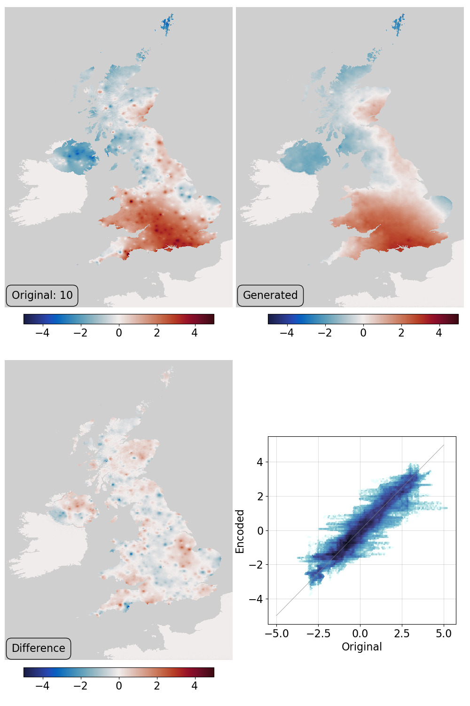

HadUK-Grid Tmax - validate the trained VAE¶

VAE validation: top left - original field, top right - generator output, bottom left - difference, bottom right - scatter original::output. The point anomalies in the original, at the locations of some of the stations used, are an artefact of the simple spatial covariance model used in the dataset gridding process. That the generator does not reproduce them might be an advantage.¶
Script to make the validation figure
#!/usr/bin/env python
# Plot a validation figure for the autoencoder.
# Fir components
# 1) Original field
# 2) Encoded field
# 3) Difference field
# 4) Original:Encoded scatter
#
import tensorflow as tf
import os
import sys
import random
import matplotlib
from matplotlib.backends.backend_agg import FigureCanvasAgg as FigureCanvas
from matplotlib.figure import Figure
import argparse
parser = argparse.ArgumentParser()
parser.add_argument("--epoch", help="Epoch", type=int, required=True)
parser.add_argument(
"--case", help="Test case to plot", type=int, required=False, default=0
)
args = parser.parse_args()
sys.path.append("%s/." % os.path.dirname(__file__))
from plot_HUKG_comparison import get_land_mask
from plot_HUKG_comparison import plot_Tmax
from plot_HUKG_comparison import plot_scatter
from plot_HUKG_comparison import plot_colourbar
# Load the data source provider
sys.path.append("%s/.." % os.path.dirname(__file__))
from makeDataset import getDataset
from autoencoderModel import DCVAE
testData = getDataset(purpose="test")
autoencoder = DCVAE()
weights_dir = ("%s/Proxy_20CR/models/DCVAE_single_HUKG_Tmax/" + "Epoch_%04d") % (
os.getenv("SCRATCH"),
args.epoch,
)
load_status = autoencoder.load_weights("%s/ckpt" % weights_dir).expect_partial()
# Check the load worked
load_status.assert_existing_objects_matched()
# Get the field to use
count = 0
for t_in in testData:
if count == args.case:
break
count += 1
# Make encoded version
encoded = tf.convert_to_tensor(autoencoder.predict_on_batch(tf.reshape(t_in, [1, 1440, 896, 1])))
# Make the figure
lm = get_land_mask()
fig = Figure(
figsize=(10, 15),
dpi=100,
facecolor=(0.88, 0.88, 0.88, 1),
edgecolor=None,
linewidth=0.0,
frameon=False,
subplotpars=None,
tight_layout=None,
)
canvas = FigureCanvas(fig)
matplotlib.rcParams.update({"font.size": 16})
ax_global = fig.add_axes([0, 0, 1, 1], facecolor="white")
ax_global.set_axis_off()
ax_global.autoscale(enable=False)
ax_global.fill((-0.1, 1.1, 1.1, -0.1), (-0.1, -0.1, 1.1, 1.1), "white")
# Top left - original field
ax_of = fig.add_axes([0.01, 0.565, 0.485, 0.425])
ax_of.set_aspect("auto")
ax_of.set_axis_off()
ofp = plot_Tmax(
ax_of,
(t_in - 0.5) * 10,
vMin=-5,
vMax=5,
land=lm,
label="Original: %d" % args.case,
)
ax_ocb = fig.add_axes([0.05, 0.505, 0.405, 0.05])
plot_colourbar(fig, ax_ocb, ofp)
# Top right - encoded field
ax_of = fig.add_axes([0.502, 0.565, 0.485, 0.425])
ax_of.set_aspect("auto")
ax_of.set_axis_off()
ofp = plot_Tmax(
ax_of,
(encoded - 0.5) * 10,
vMin=-5,
vMax=5,
land=lm,
label="Generated",
)
ax_ocb = fig.add_axes([0.57, 0.505, 0.405, 0.05])
plot_colourbar(fig, ax_ocb, ofp)
# Bottom left - difference field
ax_of = fig.add_axes([0.01, 0.065, 0.485, 0.425])
ax_of.set_aspect("auto")
ax_of.set_axis_off()
ofp = plot_Tmax(
ax_of,
(encoded - t_in) * 10,
vMin=-5,
vMax=5,
land=lm,
label="Difference",
)
ax_ocb = fig.add_axes([0.05, 0.005, 0.405, 0.05])
plot_colourbar(fig, ax_ocb, ofp)
# Bottom right - scatterplot
ax_scatter = fig.add_axes([0.57, 0.116, 0.4, 0.266])
plot_scatter(ax_scatter, t_in, encoded)
fig.savefig("comparison.png")
Utility functions used in the plot
# Functions to plot haduk-grid before and after autoencoding
# Takes data in tensorflow format (no geometry metadata, normalised)
import os
import sys
import iris
import numpy as np
import tensorflow as tf
import matplotlib
import cmocean
sys.path.append(
"%s/../../../data/prepare_training_tensors_HUKG_Tmax/" % os.path.dirname(__file__)
)
from HUKG_load_tmax import HUKG_trim
# It's a spatial map, so want the land mask
def get_land_mask():
mask = iris.load_cube(
"%s/fixed_fields/land_mask/HadUKG_land_from_Copernicus.nc"
% os.getenv("DATADIR")
)
return HUKG_trim(mask)
def plot_Tmax(
ax,
tmx,
vMin=0,
vMax=1,
obs=None,
o_size=1,
land=None,
mask=None,
label=None,
):
if land is None:
land = get_land_mask()
lats = land.coord("projection_y_coordinate").points
lons = land.coord("projection_x_coordinate").points
land_img = ax.pcolorfast(
lons, lats, land.data, cmap="Greys", alpha=1.0, vmax=1.2, vmin=-0.5, zorder=10
)
pdata = tf.squeeze(tmx).numpy()
if mask is not None:
pdata[mask]=0
pdata = np.ma.masked_where(land.data == 0,pdata)
T_img = ax.pcolorfast(
lons,
lats,
pdata,
cmap=cmocean.cm.balance,
vmin=vMin,
vmax=vMax,
alpha=1.0,
zorder=40,
)
if obs is not None:
obs = tf.squeeze(obs)
x = (obs[:,1].numpy()/896)*(lons[-1]-lons[0])+lons[0]
y = (obs[:,0].numpy()/1440)*(lats[-1]-lats[0])+lats[0]
ax.scatter(x, #((x/2).astype(int)+1)*2,
y, #((y/2).astype(int)+1)*2,
s=3.0*o_size,
c='black',
marker='o',
alpha=1.0,
zorder=60)
if label is not None:
ax.text(
lons[0] + (lons[-1] - lons[0]) * 0.03,
lats[0] + (lats[-1] - lats[0]) * 0.02,
label,
horizontalalignment="left",
verticalalignment="bottom",
color="black",
bbox=dict(
facecolor=(0.8, 0.8, 0.8, 0.8),
edgecolor="black",
boxstyle="round",
pad=0.5,
),
size=16,
clip_on=True,
zorder=100,
)
return T_img
def plot_scatter(ax, t_in, t_out, land=None, d_max=5, d_min=-5):
x = (t_in.numpy().flatten() - 0.5) * 10
y = (t_out.numpy().flatten() - 0.5) * 10
# if land is not None:
# ld = land.data.flatten
y = y[x != 0]
x = x[x != 0]
ax.hexbin(
x=x,
y=y,
cmap=cmocean.cm.ice_r,
bins="log",
mincnt=1,
)
ax.add_line(
matplotlib.lines.Line2D(
xdata=(d_min, d_max),
ydata=(d_min, d_max),
linestyle="solid",
linewidth=0.5,
color=(0.5, 0.5, 0.5, 1),
zorder=100,
)
)
ax.set(xlabel="Original", ylabel="Encoded")
ax.grid(color="black", alpha=0.2, linestyle="-", linewidth=0.5)
def plot_colourbar(
fig,
ax,
T_img,
):
ax.set_axis_off()
cb = fig.colorbar(
T_img, ax=ax, location="bottom", orientation="horizontal", fraction=1.0
)

{kind=link}